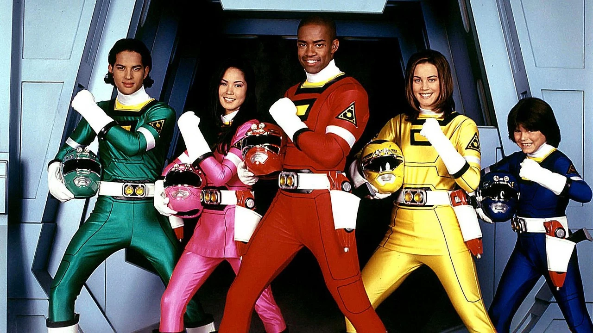

Power Rangers Turbo é uma série de televisão americana e a quinta produção da franquia Power Rangers , exibida em 1997. A série foi precedida pelo segundo filme da franquia, Turbo: Um Filme dos Power Rangers .
Assim como seus antecessores, Power Rangers Turbo é baseado em uma das séries Super Sentai ; no caso de Turbo, a fonte é a 20ª série, Gekisou Sentai Carranger . A série apresentou um ator mirim como o novo Ranger Azul, tornando-se assim a única série até o momento a apresentar um Ranger pré-adolescente, [ 1 ] [ 2 ] e marcou a saída dos personagens veteranos Zordon e Alpha 5; a equipe de Rangers também se despediu, com quatro novos personagens sendo introduzidos como seus substitutos. A série também marcou as últimas aparições regulares de Johnny Yong Bosch , Catherine Sutherland e Steve Cardenas , bem como a última aparição de Nakia Burrise .